Curated Paper III results¶
Working companion — evolving, not yet distributed
This site is the coauthor-facing view of the Paper III computations while the paper is being prepared. Content evolves as results come in. It is not being distributed until the manuscript is submitted to a journal and arXiv, at which point a milestone tag will freeze the results to match the paper. Access is not restricted, so please note the evidence tier attached to anything you read here.
The release contains one complete stationary-continuation study and two selected time-integration figure families. These are the only reader-facing numerical objects. The larger historical archive is preserved for provenance, but folder names and legacy galleries do not define evidence status.
Stationary continuation across four regimes¶
The local coefficient, measured independently¶
Instead of integrating in time, this experiment prescribes the signed first-cosine amplitude and solves the stationary finite-difference equations. For each mesh it fits
then compares \(c_{2,h}\) with the analytical value \(\beta_{n_0}/\alpha_{n_0}\).
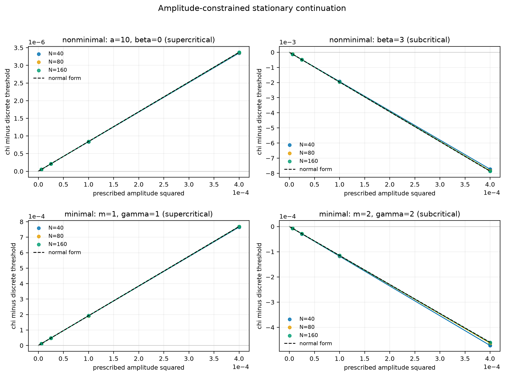
| Case | Direction | Theory \(c_2\) | \(c_{2,160}\) | Finest relative error |
|---|---|---|---|---|
Non-minimal a=10, beta=0 |
Supercritical | 0.0084254463 |
0.0084220572 |
4.02e-4 |
Non-minimal beta=3 |
Subcritical | -19.66671032 |
-19.64492609 |
1.11e-3 |
Minimal m=gamma=1 |
Supercritical | 1.922989917 |
1.922366447 |
3.24e-4 |
Minimal m=gamma=2 |
Subcritical | -1.148587331 |
-1.150522206 |
1.68e-3 |
The coefficient errors refine at observed order 1.998--2.009. All 780 of
780 acceptance gates pass. The largest full stationary u residual is
8.51e-11, the largest independently reconstructed elliptic residual is
1.14e-10, and the largest fixed-mass error is 3.33e-16.
Near-threshold time integration¶
These two three-panel composites are the time-dependent figures retained in the manuscript. They use fixed perturbations and report semidiscrete behavior on the named archives.
Quasi-linear supercritical benchmark¶
Parameters: a=10, b=alpha=m=gamma=mu=nu=L=1, beta=0¶
The full center-graph calculation gives
The below-threshold trajectory returns toward the constant state; the two
above-threshold trajectories approach symmetry-related patterns. For the
1%-above run, the final cosine amplitude is 1.62372574646, compared with the
leading-order prediction 1.61159217017.
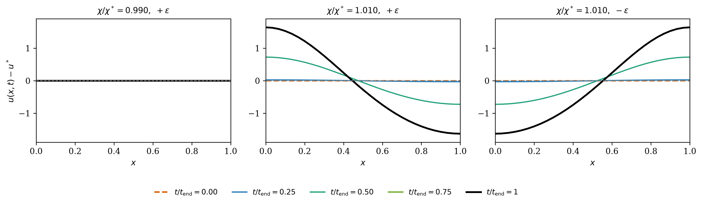
Nonlinear-mobility supercritical benchmark¶
Parameters: a=b=alpha=1, m=2, beta=1, gamma=2, mu=nu=L=1¶
The corrected analytical values are
Fixed positive and negative seeds above threshold produce opposite patterned trajectories, while the selected below-threshold run decays. This family tests nonlinear chemotactic mobility and nonlinear signal production.
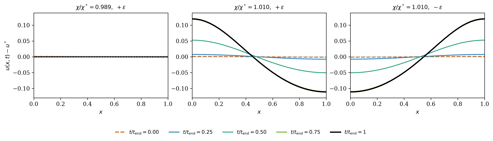
Approaching the threshold: the square-root amplitude law¶
Why the earlier pictures looked far from the constant state¶
The published time-integration panels sit at \(+1\%\), \(+2\%\) and \(+5\%\) above \(\chi^*\), where the amplitude is already \(O(0.3)\)–\(O(0.5)\). That is not near threshold. Theory predicts
so the branch collapses onto the constant state as \(\chi_0\downarrow\chi^*\). This sweep goes down to \(+0.1\%\) on the supercritical family \(m=\tfrac12,\ \gamma=2,\ L=5.3,\ n_0=2,\ \beta=1\), with \(\chi^*=4.116954\), \(\alpha_{n_0}=0.584273\), \(\beta_{n_0}=0.261571\), \(c_2=0.447686\).
| Offset | \(\chi_0-\chi^*\) | \(\lvert A\rvert\) measured | \(\sqrt{(\chi_0-\chi^*)/c_2}\) | Relative deviation |
|---|---|---|---|---|
+0.1% |
4.1170e-03 |
0.09591 |
0.09590 |
+0.0% |
+0.25% |
1.0292e-02 |
0.14964 |
0.15162 |
-1.3% |
+0.5% |
2.0585e-02 |
0.20797 |
0.21443 |
-3.0% |
+1% |
4.1170e-02 |
0.28000 |
0.30325 |
-7.7% |
+2% |
8.2339e-02 |
0.38160 |
0.42886 |
-11.0% |
+5% |
2.0585e-01 |
0.52590 |
0.67809 |
-22.4% |
At \(+0.1\%\) the measured amplitude matches the prediction to four significant
figures, and \(A(+\varepsilon)=-A(-\varepsilon)\) to every digit shown. The
log–log slope is 0.4811 over the three near-threshold offsets and 0.4854
over the two smallest, against \(\tfrac12\) predicted.
Read the near-threshold rows, not the six-point fit
A slope fitted over all six offsets gives 0.4381. That number is
dominated by the large-offset rows where the quartic term is not small.
The square-root law is a statement about the limit
\(\chi_0\downarrow\chi^*\).
Critical slowing down¶
The growth rate vanishes at threshold, so the closer the run, the longer it must be integrated:
| Offset | \(\chi_0-\chi^*\) | Settling time |
|---|---|---|
+0.1% |
4.1170e-03 |
2840 |
+0.25% |
1.0292e-02 |
1338 |
+0.5% |
2.0585e-02 |
743 |
This gives \(t_{\text{settle}}\propto(\chi_0-\chi^*)^{-0.833}\). The exponent is
shallower than \(-1\) because
\(t\approx\sigma^{-1}\log(A_\infty/\varepsilon)\) with
\(\sigma\propto\chi_0-\chi^*\), and the logarithmic factor shrinks too; the
combination \(t(\chi_0-\chi^*)/\log(A_\infty/\varepsilon)\) is constant to
within 12%.
Practical consequence. A near-threshold run stopped too early reports an amplitude that has not settled, and will appear to violate the square-root law.
Subcritical families above the direction-reversal threshold¶
A family is subcritical only when \(\beta>\beta^+\), the unique positive root of \(\beta_{n_0}\). Several archived runs sit below their own \(\beta^+\) and are therefore supercritical at their own parameters, which is why no branch appears below \(\chi^*\) for them. The four families here are evaluated above \(\beta^+\); in every case \(\chi_h(A)<\chi_h^*\) at every prescribed amplitude.
| \(m\) | \(\gamma\) | \(L\) | \(n_0\) | \(\beta^+\) | \(\beta\) | Finest \(N\) | Measured \(c_2\) | Theory \(c_2\) | Rel. error | Order |
|---|---|---|---|---|---|---|---|---|---|---|
0.5 |
2 |
1.0 |
1 |
2.540 |
3 |
160 |
-5.07897 |
-5.08775 |
1.7e-03 |
2.000 |
0.5 |
3 |
5.3 |
2 |
4.369 |
5 |
640 |
-15.04668 |
-15.02116 |
1.7e-03 |
2.004 |
0.5 |
3 |
8.0 |
3 |
4.318 |
5 |
768 |
-16.55107 |
-16.51077 |
2.4e-03 |
2.003 |
2 |
2 |
1.0 |
1 |
5.312 |
6 |
320 |
-55.27701 |
-55.47344 |
3.5e-03 |
1.984 |
All with \(a=b=\alpha=\mu=\nu=1\) and \(u^*=1\).
Disclosed diagnostic, and two families out of range
The free-intercept discrepancy, at most 3.93e-10 for the v1 benchmarks,
reaches 1.7e-09, 1.6e-09 and 1.3e-07 for rows 2–4. It is a property of
the quartic fit, not of the branch: halving the amplitude window drops it
by more than an order of magnitude while \(c_2\) is unchanged to all
reported digits. The published amplitude set was kept rather than narrowed.
Two further families require \(\beta^+\approx27.8\) and \(\approx40.2\). Since \(\chi^*\propto2^{\beta}\) at \(v^*=1\), those need sensitivities of order \(10^{9}\) and \(10^{13}\), so they are out of range and are not reported.
Provenance boundary¶
Four earlier families remain versioned but are excluded from the current
contract: two time-dependent minimal-model archives with conservation or
classification problems, the obsolete beta=3 coefficient-seeded runs, and
the reclassified all-ones coefficient-seeded runs. Their exact Git paths and
reasons are recorded under provenance_only in the
manifest; this page intentionally provides
no galleries or preview links for them.
Scientific scope
The figures and fitted coefficients are evidence about the spatially semidiscrete computations. The continuous-PDE conclusions come from the manuscript's analysis.
Candidate stationary cases (not validated evidence)¶
These are candidates, not results of this paper
The twelve bundles below are not part of the Paper III evidence
contract and must not be cited as validated. They are published so the
computation is inspectable and reproducible, at an explicitly lower tier
than the four validated_current stationary cases above. Promotion to
validated_current is an author decision that has not been taken.
Each candidate extends the stationary-continuation study to a nontrivial
critical mode (n₀ = 2 or 3) or to a new sensitivity exponent. Every bundle
carries the same artifact set as the validated v1 bundle, plus the exact
run-card.yaml it was generated from, and each is checked in CI by the same
machinery that guards v1:
- every file hash in
SHA256SUMSis re-derived from the committed Git object; - the generating tree must have been clean;
- the bundle's own acceptance gates must all pass;
- the continuum minimizing mode must equal the declared critical mode;
theory_c2must equalbeta_n0 / alpha_n0, withalpha_n0 > 0; and- the label gate: the sign of the measured branch slope
c₂at the finest mesh must equal the sign of the closed-formbeta_n0, which must in turn agree with the declared regime.
The manifest's numbers for each candidate are compared against the bundle itself, so a manifest entry cannot disagree with the artifact it describes.
Twelve candidate bundles are published. Every row below is read from the
bundle's own fit-summary.json; the site cannot disagree with the artifacts.
| Case | family | L | n₀ | β | closed-form β_{n₀} | measured c₂ (finest) | order | gates | regime |
|---|---|---|---|---|---|---|---|---|---|
hm-a10-g1-L3p5-n2-beta0 |
a=10, γ=1 | 3.5 | 2 | 0 | +0.118097 | +0.015458 | 2.001 | 183/183 | supercritical |
hm-a10-g1-L3p5-n2-beta2 |
a=10, γ=1 | 3.5 | 2 | 2 | -0.094491 | -1.498507 | 1.975 | 123/123 | subcritical |
hm-a10-g1-L5p3-n3-beta0 |
a=10, γ=1 | 5.3 | 3 | 0 | +0.121382 | +0.015951 | 1.999 | 183/183 | supercritical |
hm-a10-g1-L5p3-n3-beta2 |
a=10, γ=1 | 5.3 | 3 | 2 | -0.094990 | -1.513524 | 1.963 | 123/123 | subcritical |
hm-m05-g2-L5p3-n2-beta1 |
m=0.5, γ=2 | 5.3 | 2 | 1 | +0.261571 | +0.447162 | 1.997 | 123/123 | supercritical |
hm-m05-g2-L5p3-n2-beta2 |
m=0.5, γ=2 | 5.3 | 2 | 2 | -0.447701 | -1.536975 | 2.005 | 123/123 | subcritical |
hm-m05-g2-L8-n3-beta1 |
m=0.5, γ=2 | 8 | 3 | 1 | +0.253238 | +0.434907 | 1.996 | 123/123 | supercritical |
hm-m05-g2-L8-n3-beta2 |
m=0.5, γ=2 | 8 | 3 | 2 | -0.457315 | -1.580808 | 2.008 | 123/123 | subcritical |
hm-m2-g2-L5p3-n2-beta1 |
m=2, γ=2 | 5.3 | 2 | 1 | +2.262242 | +3.867491 | 2.000 | 183/183 | supercritical |
hm-m2-g2-L5p3-n2-beta6 |
m=2, γ=2 | 5.3 | 2 | 6 | -1.351263 | -74.254250 | 2.007 | 123/123 | subcritical |
xover-m05-g2-L5p3-n2-beta0 |
m=0.5, γ=2 | 5.3 | 2 | 0 | +0.750722 | +0.641305 | 2.000 | 183/183 | supercritical |
xover-m05-g2-L5p3-n2-beta3 |
m=0.5, γ=2 | 5.3 | 2 | 3 | -1.377093 | -9.441942 | 2.001 | 183/183 | subcritical |
c₂ is the measured branch slope at the finest mesh and β_{n₀} the
closed-form cubic coefficient; they carry the same sign because
c₂ = β_{n₀}/α_{n₀} with α_{n₀} > 0. Observed orders are the empirical
mesh-refinement rates.
Figures¶
-
hm-a10-g1-L3p5-n2-beta0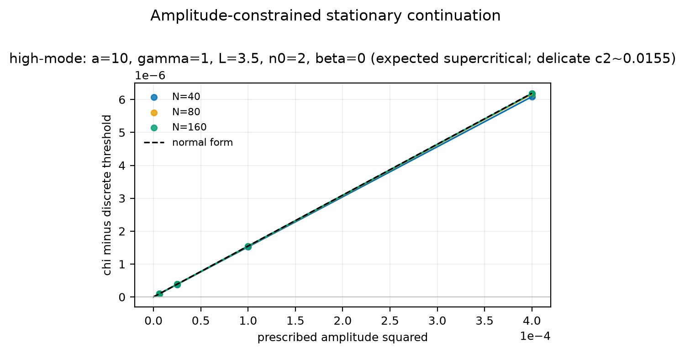
L=3.5, n₀=2, β=0 · β_{n₀}=+0.1181 · c₂=+0.0155 · supercritical
-
hm-a10-g1-L3p5-n2-beta2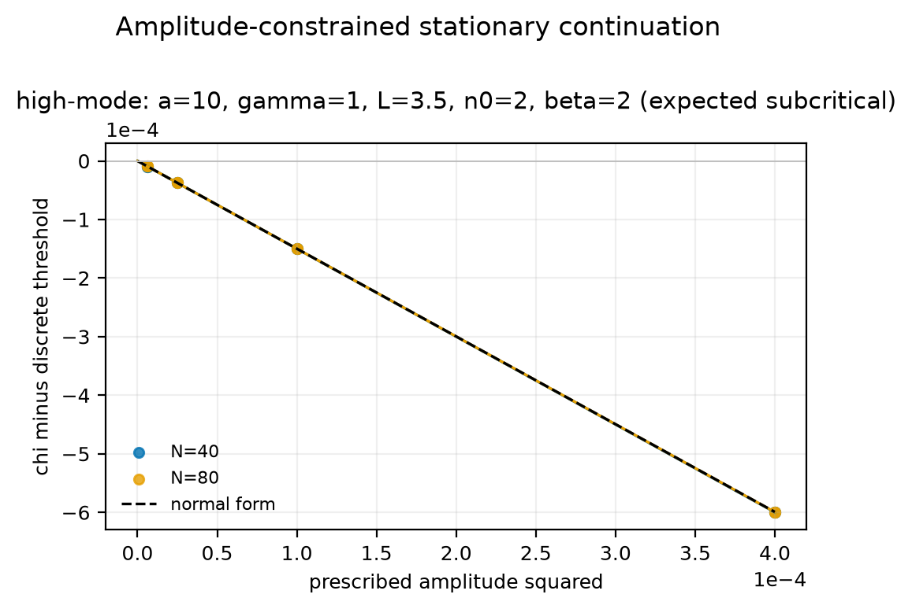
L=3.5, n₀=2, β=2 · β_{n₀}=-0.0945 · c₂=-1.4985 · subcritical
-
hm-a10-g1-L5p3-n3-beta0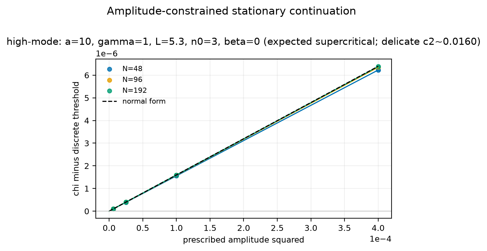
L=5.3, n₀=3, β=0 · β_{n₀}=+0.1214 · c₂=+0.0160 · supercritical
-
hm-a10-g1-L5p3-n3-beta2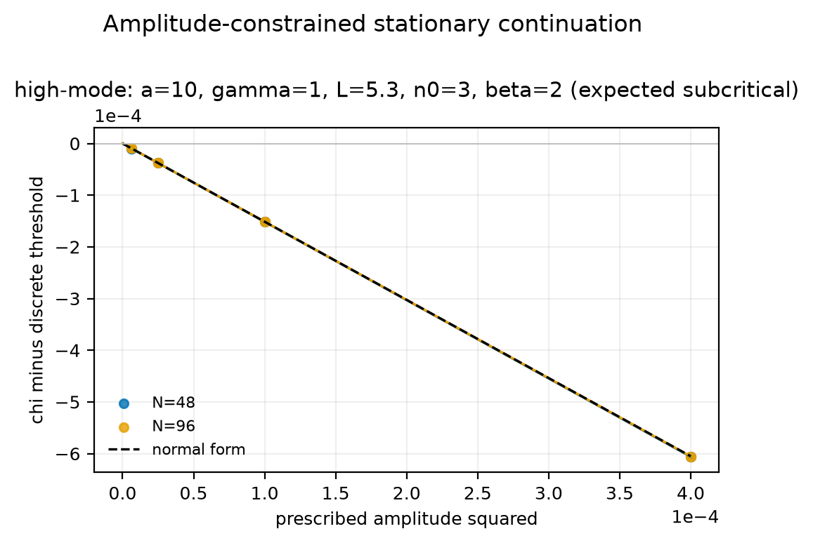
L=5.3, n₀=3, β=2 · β_{n₀}=-0.0950 · c₂=-1.5135 · subcritical
-
hm-m05-g2-L5p3-n2-beta1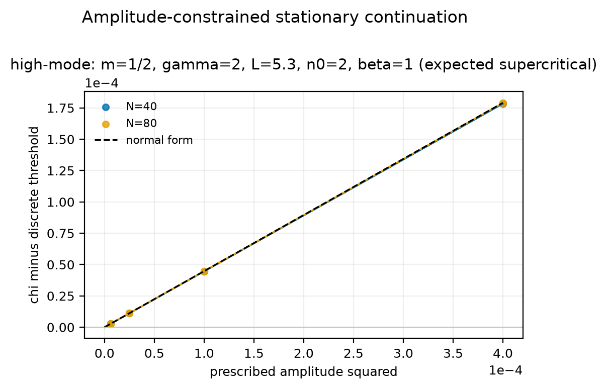
L=5.3, n₀=2, β=1 · β_{n₀}=+0.2616 · c₂=+0.4472 · supercritical
-
hm-m05-g2-L5p3-n2-beta2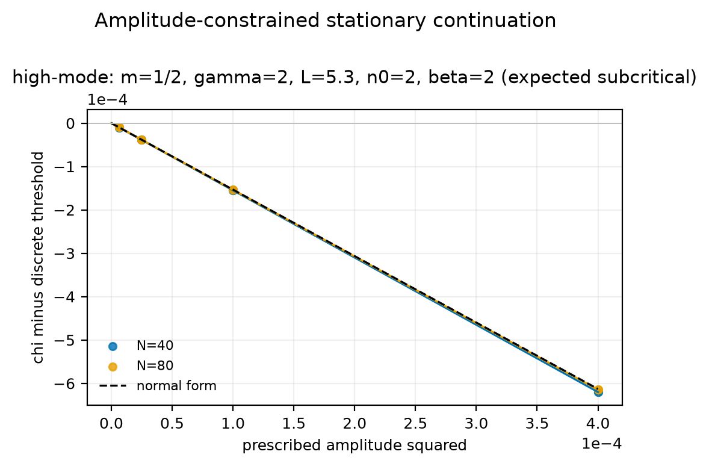
L=5.3, n₀=2, β=2 · β_{n₀}=-0.4477 · c₂=-1.5370 · subcritical
-
hm-m05-g2-L8-n3-beta1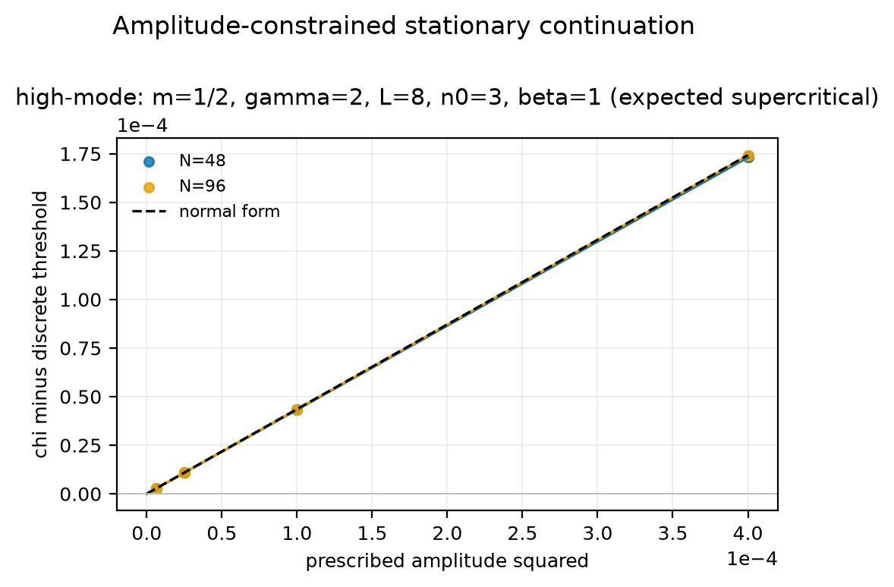
L=8, n₀=3, β=1 · β_{n₀}=+0.2532 · c₂=+0.4349 · supercritical
-
hm-m05-g2-L8-n3-beta2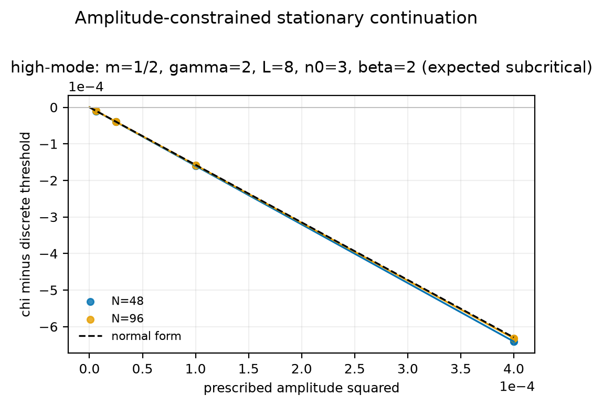
L=8, n₀=3, β=2 · β_{n₀}=-0.4573 · c₂=-1.5808 · subcritical
-
hm-m2-g2-L5p3-n2-beta1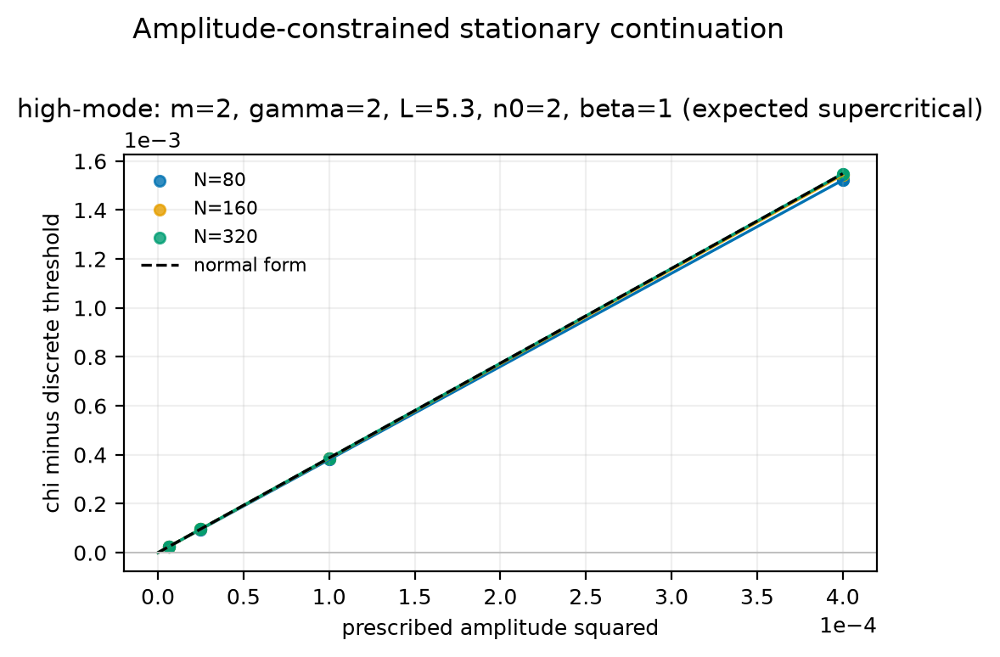
L=5.3, n₀=2, β=1 · β_{n₀}=+2.2622 · c₂=+3.8675 · supercritical
-
hm-m2-g2-L5p3-n2-beta6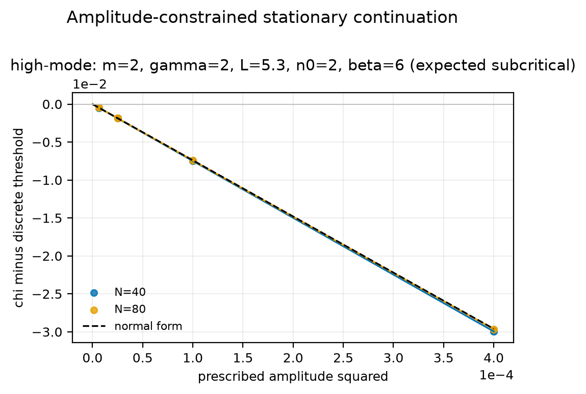
L=5.3, n₀=2, β=6 · β_{n₀}=-1.3513 · c₂=-74.2543 · subcritical
-
xover-m05-g2-L5p3-n2-beta0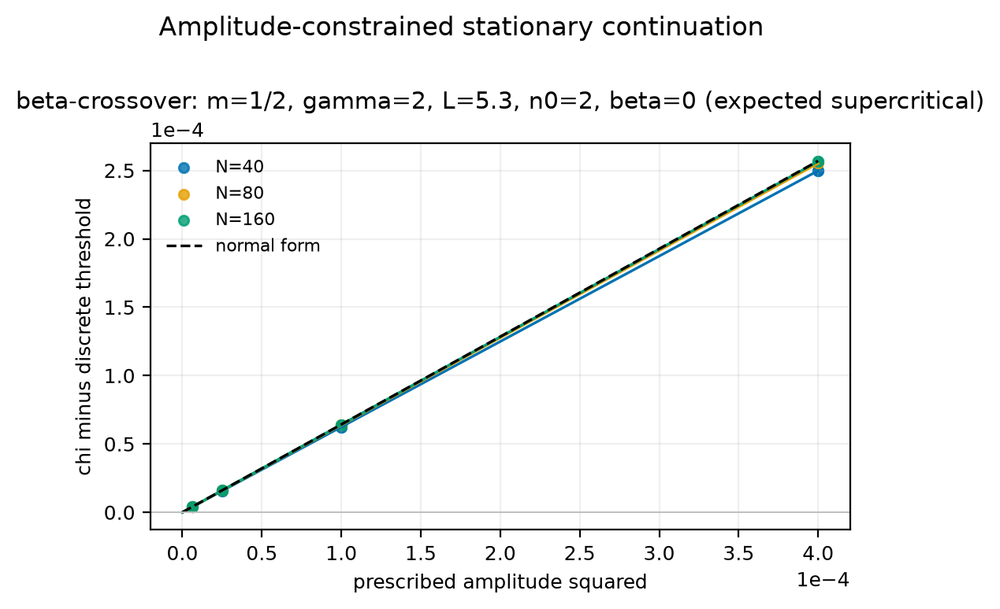
L=5.3, n₀=2, β=0 · β_{n₀}=+0.7507 · c₂=+0.6413 · supercritical
-
xover-m05-g2-L5p3-n2-beta3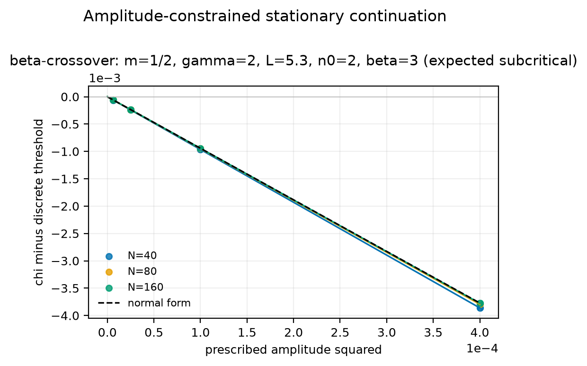
L=5.3, n₀=2, β=3 · β_{n₀}=-1.3771 · c₂=-9.4419 · subcritical
β-dependence of the bifurcation direction¶
Numerical response to Wenxian's question of 2025-12-07
Wenxian asked whether β affects the bifurcation direction, not only the threshold. These four measurements are in the same family (m=1/2, gamma=2, L=5.3, n0=2), with β the only quantity moved. They are reported as measurements; whether this becomes a named result in the paper is hers to decide.
| β | closed-form β_{n₀} | measured c₂ (finest) | measured direction |
|---|---|---|---|
| 0 | +0.750722 | +0.641305 | supercritical |
| 1 | +0.261571 | +0.447162 | supercritical |
| 2 | -0.447701 | -1.536975 | subcritical |
| 3 | -1.377093 | -9.441942 | subcritical |
The measured direction changes between β = 1 and β = 2, bracketing the positive root of the closed-form quadratic in β (β⁺ ≈ 1.406 for this family).
Each bundle folder carries a README.md with its parameters, measured
numbers, and a reproduction command; browse them on
GitHub.
Every bundle path is also listed under candidate_stationary_cases in the
evidence manifest. Folder names are
provenance identifiers, not evidence classifications.
Machine-readable record¶
The Paper III evidence manifest freezes the
two evidence layers, all source revisions, figure hashes, v1 checksums, case
IDs, branch slopes, acceptance metrics, and provenance exclusions. CI resolves
every declared object from Git and rejects a reader-facing link to any
provenance-only raw family. Candidate cases are recorded separately under
candidate_stationary_cases and are excluded from the reader-facing contract.